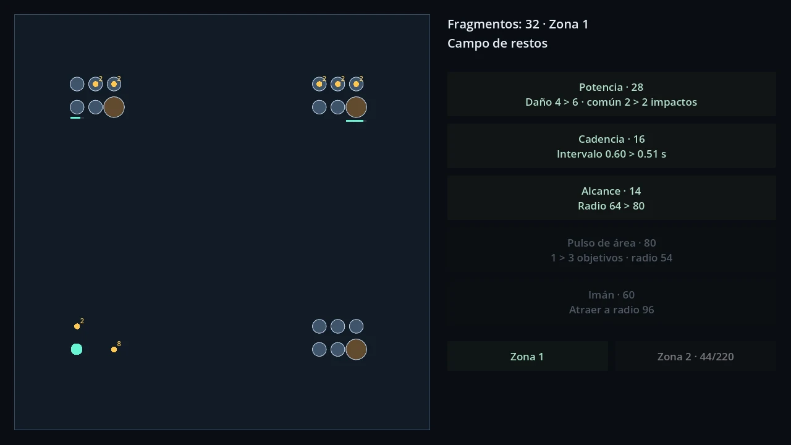
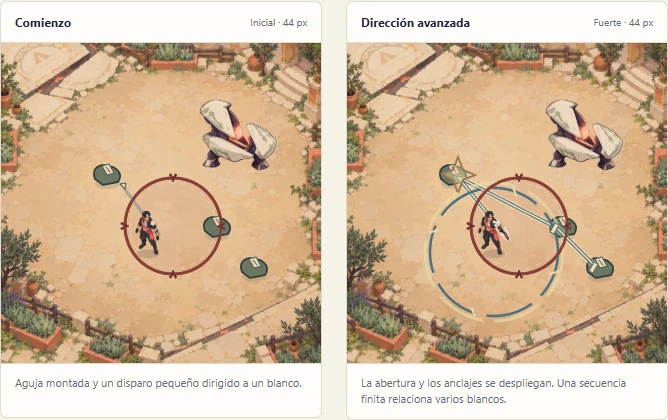

Progress that stays
The design centres on lasting upgrades, farming and boss gates, with a character that keeps developing between challenges.
Independent studio · Spain
We're Giro Cero. Right now, we're building our first game around one idea: progression you can see and feel.
Explore Project 01First game. Early development.
01Current project
EARLY DEVELOPMENTAction / idle RPG · Top-down 2D
Start with a simple attack. Build towards something much bigger.
Our first game explores long-term progression through a modular character and ancient relics. The direction is about changes you can recognise: a new silhouette, a different attack pattern, a build that handles a challenge in a new way.
The design centres on lasting upgrades, farming and boss gates, with a character that keeps developing between challenges.
Modular relics are intended to change the character's appearance and attacks, from a focused hit to combinations that reach a whole group.
We're designing automatic combat alongside optional hands-on positioning and skill timing. The next prototype will test how they work together.
Working title. Systems and art are still being explored. Companions and character collection belong to the longer-term direction.
See where development stands02Development notes
PROJECT SNAPSHOT / OCTOBER 2026A working prototype, a documented direction, and a small next experiment.


A Godot web prototype connects moving, breaking targets, collecting fragments and buying upgrades. Two zones and five upgrade families give us something concrete to evaluate.
Product and creative direction are documented. Current visual studies explore an anime relic hunter, modular equipment and a fantasy world built over ancient technology.
The planned test compares two power states, an active skill and a boss encounter. The question is simple: does growing stronger visibly change the way combat feels?
03About Giro Cero
An independent studio in Spain, at the beginning of its story.
The focus today is our first game: finding a satisfying core, testing it, and giving it a visual identity of its own. We work in small steps, with room to change direction when a prototype teaches us something.
Based in Spain. Building for players everywhere.
Test a small, playable idea before committing to more systems or a bigger content list.
An upgrade should change what you can do, and give you a reason to try it.
Spectacular combinations work best when you can still see your character, your targets and the danger.
04Contact
Questions about the studio or the project? Get in touch.